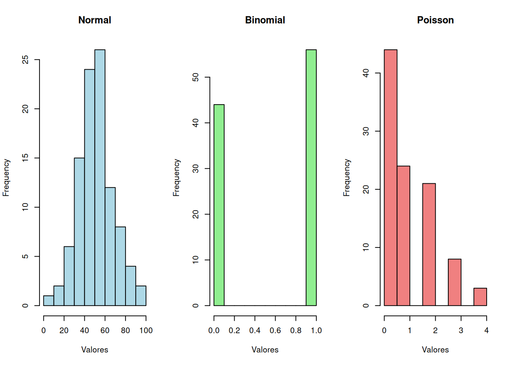
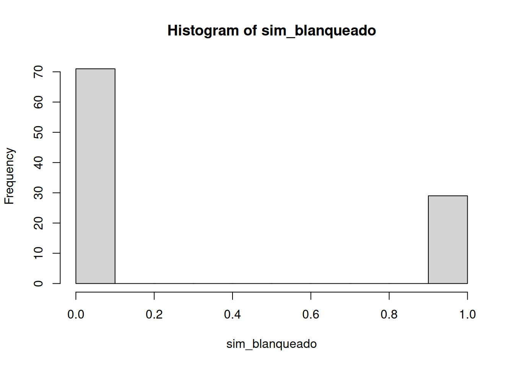
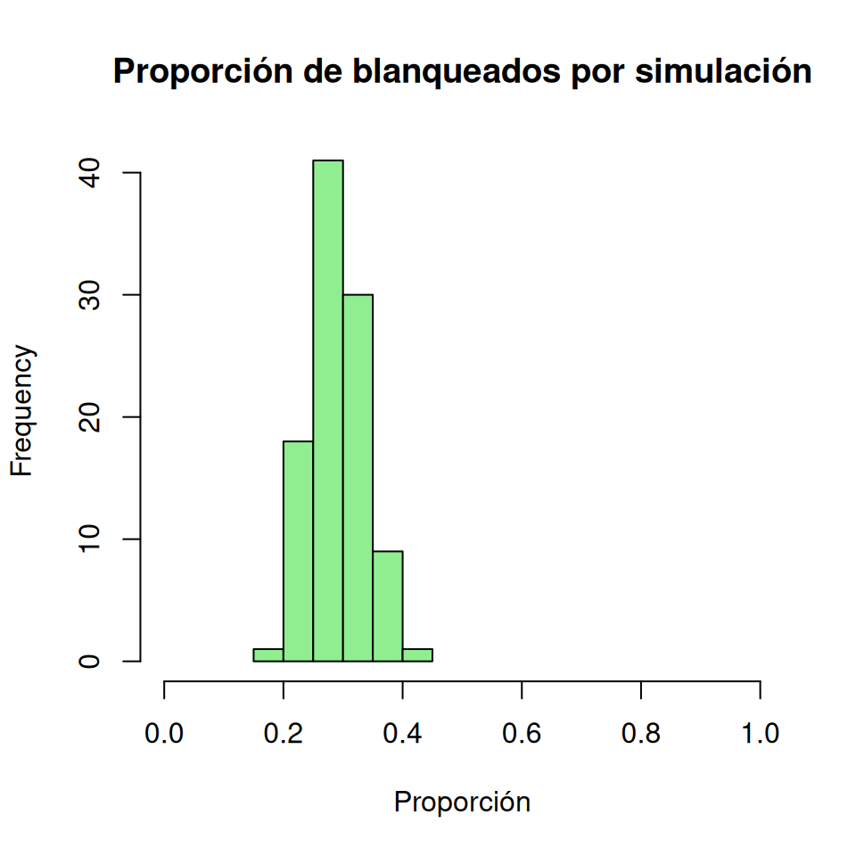
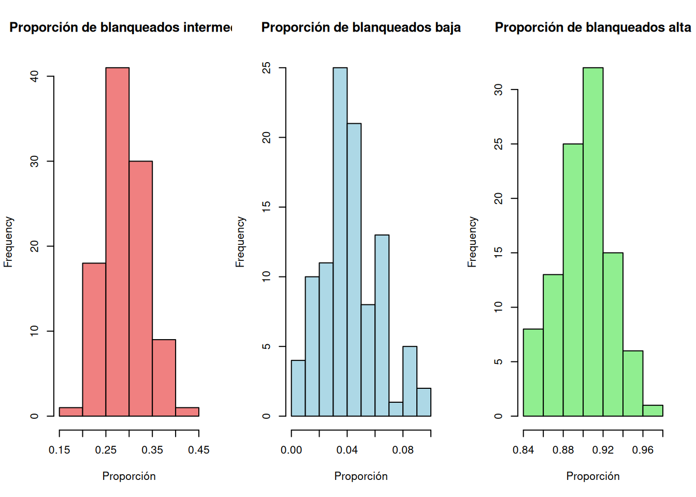
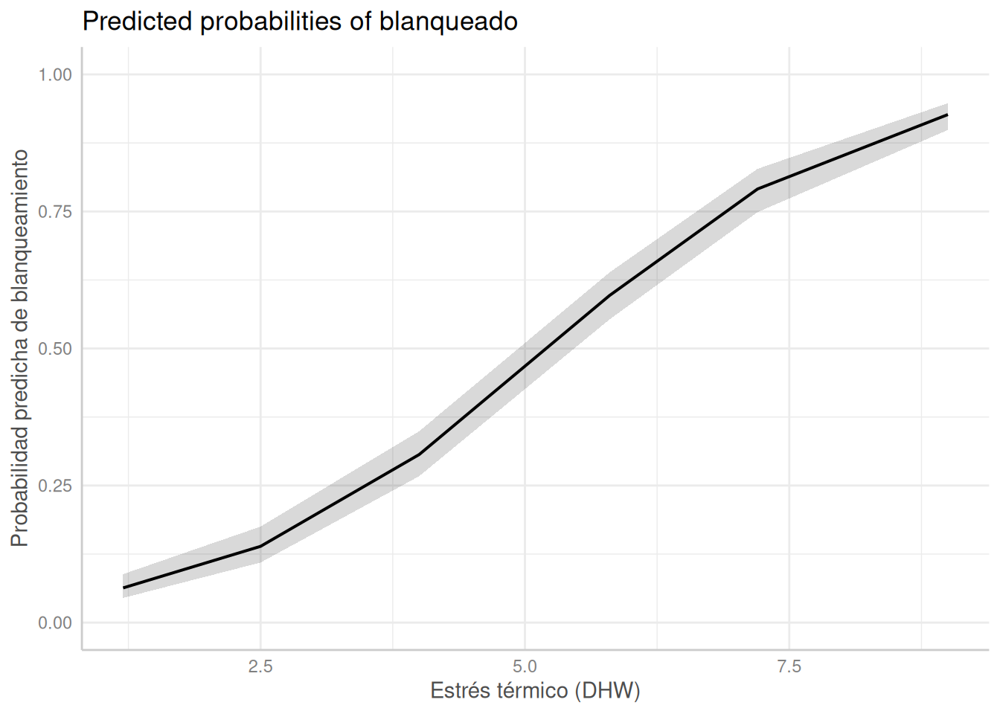

library(ggplot2)Lab 04: Modelos lineales generalizados
Escenario 1: Blanqueamiento de corales (binomial)
Contexto ecológico
Los corales dependen de una relación simbiótica con Dinoflagelados (zooxantelas) que viven en sus tejidos, les proporcionan alimento y contribuyen a sus colores. Cuando la temperatura del océano aumenta demasiado, los corales sufren estrés y expulsan las algas: se vuelven blancos, un fenómeno llamado blanqueamiento. Si el calor persiste, los corales pueden morir.
Los ecólogos marinos miden el estrés térmico con las Degree Heating Weeks (DHW), un índice que resume el calor acumulado durante las 12 semanas previas.
- Predictor (\(x\)): intensidad del estrés térmico (índice DHW).
- Respuesta biológica (\(y\)): cada colonia es sana/recuperada (\(0\)) o blanqueada/muerta (\(1\)).
Proceso
- Hay dos posibilidades. Cada coral puede ser sano/recuperado (\(0\)) o blanqueado/muerto (\(1\)).
- Valores como ‘mediosano’ o ‘medioblanqueado’ no son posibles, ya que cada coral solo puede estar en uno de los dos estados.
Cada coral individual sigue un proceso Bernoulli (un caso binomial con \(n = 1\)). Por tanto, la unidad de observación para este análisis será una colonia, con su estado de blanqueamiento registrado como \(0\) o \(1\).
Que nos indica esto sobre la distribucion matematica con cual se podria generar este tipo de datos? Se pueden generar con una distribuucion normal? O necesitamos otra distribucion?
norm <- rnorm(100, mean = 50, sd = 20)
bino <- rbinom(100, size = 1, prob = 0.5)
pois <- rpois(100, lambda = 1)
par(mfrow = c(1, 3))
hist(norm, main = "Normal", xlab = "Valores", col = "lightblue")
hist(bino, main = "Binomial", xlab = "Valores", col = "lightgreen")
hist(pois, main = "Poisson", xlab = "Valores", col = "lightcoral")
Cual distribucion parece más adecuada para modelar el estado de los corales (sano/recuperado vs blanqueado/muerto)?
Modelo generativo
Muchas veces ayuda simular datos del modelo que queremos usar antes de recolectarlos or analizar los datos reales. Por ejemplo, si creemos que el blanqueamiento sigue una distribución binomial (0/1), podemos generar datos simulados así:
set.seed(123)
n_corales <- 100
prob_blanqueado <- 0.3
sim_blanqueado <- rbinom(n_corales, size = 1, prob = prob_blanqueado)
hist(sim_blanqueado)
Si repetimos este proceso muchas veces, obtendríamos diferentes histogramas que reflejan la variabilidad esperada en el número de corales blanqueados bajo la misma probabilidad inicial. Para visualizar esta variabilidad, graficamos la proporcion de blanqueados por simulación.
set.seed(123)
n_sim <- 100
simulations <- replicate(
n_sim, rbinom(n_corales, size = 1, prob = prob_blanqueado)
)
# Graficar la proporción de blanqueados por simulación
prop_simulations <- colMeans(simulations)
hist(
prop_simulations,
main = "Proporción de blanqueados por simulación",
xlab = "Proporción",
col = "lightgreen",
xlim = c(0, 1)
)
Bajo la suposicion que la proporcion de corales blanqueados de 0.3 es la verdadera, podemos esperar que las proporciones observadas en diferentes simulaciones varíen alrededor de este valor.
Que pasa si la verdadera proporción de corales blanqueados es mucho más baja o mucho más alta? ¿Cómo cambiaría la variabilidad observada en las simulaciones?
set.seed(123)
prob_blanqueado_baja <- 0.05
prob_blanqueado_alta <- 0.9
n_sim <- 100
# Simulación con una proporción más baja
simulations_low <- replicate(
n_sim, rbinom(n_corales, size = 1, prob = prob_blanqueado_baja)
)
prop_simulations_low <- colMeans(simulations_low)
# Simulación con una proporción más alta
simulations_high <- replicate(
n_sim, rbinom(n_corales, size = 1, prob = prob_blanqueado_alta)
)
prop_simulations_high <- colMeans(simulations_high)
# Graficar la proporción de blanqueados por simulación con diferentes probabilidades
par(mfrow = c(1, 3))
hist(
prop_simulations,
main = "Proporción de blanqueados intermedia",
xlab = "Proporción",
col = "lightcoral"
)
hist(
prop_simulations_low,
main = "Proporción de blanqueados baja",
xlab = "Proporción",
col = "lightblue"
)
hist(
prop_simulations_high,
main = "Proporción de blanqueados alta",
xlab = "Proporción",
col = "lightgreen"
)
Esperamos que la variabilidad observada en las simulaciones sea mayor cuando la proporción verdadera está cerca de 50% y menor cuando está cerca de 5% o 95%. Intuitivamente, cerca de 50% hay más oportunidad de variación que cerca de 0 o 1.
Estas caracteristicas no se pueden replicar con una distribucion normal! En la distribucion normal,
- La variabilidad no depende de la media de la misma manera que en el proceso binomial.
- Valores fuera del rango [0, 1] son permitidos, lo cual no tiene sentido biológico para nuestra variable respuesta.
Tenemos que usar un modelo que no depende de la suposición de variabilidad constante y que respete los límites de la proporción (0 a 1).
Modelo lineal generalizado (GLM) binomial
En un modelo lineal, la respuesta se modela con una distribución normal y una varianza constante:
\[ Y_i \sim \mathrm{Normal}(\mu_i, \sigma^2), \qquad \mu_i = \beta_0 + \beta_1 x_i. \]
En un GLM se especifica la distribución de la respuesta. Para el estado de blanqueamiento de cada colonia:
\[ Y_i \sim \mathrm{Bernoulli}(p_i), \qquad \operatorname{logit}(p_i) = \log\left(\frac{p_i}{1-p_i}\right) = \beta_0 + \beta_1\,\mathrm{DHW}_i. \]
La función de enlace conecta la probabilidad esperada de blanqueamiento (\(p_i\)) con el predictor lineal. R aplica este enlace automáticamente al ajustar el modelo; no transforma cada proporción observada antes de la regresión.
¿Entonces, qué cambio?
- La relación entre la variable respuesta y los predictores ya no es lineal en los valores de y, sino en la escala del enlace (logit en este caso).
- La variable respuesta se modela como una distribución binomial en lugar de una distribución normal.
- La varianza de la variable respuesta depende de su probabilidad esperada, en lugar de ser constante.
En R, podemos ajustar un modelo lineal generalizado binomial utilizando la función glm(), por ejemplo:
modelo_binomial <- glm(
blanqueado ~ predictor,
family = binomial(link = "logit"),
data = datos)Aquí cada fila representa una colonia y blanqueado es una variable codificada como \(0\) (sana/recuperada) o \(1\) (blanqueada/muerta). Por eso se usa directamente como respuesta, sin cbind().
Datos
Después de una ola de calor, se evaluaron colonias de seis parches de arrecife que habían experimentado distintos niveles de estrés térmico. La tabla resume el muestreo; para el análisis, cada colonia será una fila de datos.
| Parche | Estrés térmico (DHW) | Colonias encuestadas (\(n\)) | Colonias blanqueadas (\(y\)) | Proporción blanqueada |
|---|---|---|---|---|
| A | 1.2 | 150 | 8 | 5.3% |
| B | 2.5 | 142 | 22 | 15.5% |
| C | 4.0 | 160 | 51 | 31.9% |
| D | 5.8 | 155 | 88 | 56.8% |
| E | 7.2 | 148 | 118 | 79.7% |
| F | 9.0 | 162 | 151 | 93.2% |
Analizar
# Resumen del muestreo por parche
parches <- data.frame(
parche = c("A", "B", "C", "D", "E", "F"),
dhw = c(1.2, 2.5, 4.0, 5.8, 7.2, 9.0),
n_colonies = c(150, 142, 160, 155, 148, 162),
n_blanqueadas = c(8, 22, 51, 88, 118, 151)
)
# Una fila por colonia: 0 = sana/recuperada, 1 = blanqueada/muerta
corales <- do.call(rbind, Map(
function(parche, dhw, n_colonies, n_blanqueadas) {
data.frame(
parche = parche,
dhw = dhw,
blanqueado = c(rep(1, n_blanqueadas), rep(0, n_colonies - n_blanqueadas))
)
},
parches$parche,
parches$dhw,
parches$n_colonies,
parches$n_blanqueadas
))
# Modelo binomial con enlace logit
modelo_binomial <- glm(
blanqueado ~ dhw,
family = binomial(link = "logit"),
data = corales
)
# Coeficientes del modelo
summary(modelo_binomial)
Call:
glm(formula = blanqueado ~ dhw, family = binomial(link = "logit"),
data = corales)
Coefficients:
Estimate Std. Error z value Pr(>|z|)
(Intercept) -3.49998 0.22925 -15.27 <2e-16 ***
dhw 0.67097 0.04136 16.22 <2e-16 ***
---
Signif. codes: 0 '***' 0.001 '**' 0.01 '*' 0.05 '.' 0.1 ' ' 1
(Dispersion parameter for binomial family taken to be 1)
Null deviance: 1269.40 on 916 degrees of freedom
Residual deviance: 828.16 on 915 degrees of freedom
AIC: 832.16
Number of Fisher Scoring iterations: 4Los coeficientes de un modelo binomial con enlace logit están expresados en la escala de log-odds, no directamente como probabilidades. Para obtener una probabilidad, aplicamos plogis() al predictor lineal completo.
El intercepto (\(\beta_0=-3.500\)) representa los log-odds de blanqueamiento cuando \(\mathrm{DHW}=0\). Podemos convertirlo a probabilidad con plogis():
plogis(coef(modelo_binomial)["(Intercept)"])(Intercept)
0.02931279 Por tanto, el modelo estima una probabilidad de blanqueamiento de aproximadamente 2.9% cuando \(\mathrm{DHW}=0\).
El coeficiente de DHW (\(\beta_1=0.671\)) no representa un aumento de 67.1% en la probabilidad. Por cada unidad adicional de DHW, los odds de blanqueamiento se multiplican por \(\exp(0.671) \approx 1.96\), es decir, aumentan aproximadamente 96%. El cambio en la probabilidad depende del nivel inicial de DHW, por lo que se interpreta mejor con predicciones del modelo:
predictor_5_5 <- predict(modelo_binomial, newdata = data.frame(dhw = 5.5))
plogis(predictor_5_5) 1
0.5474437 Para estos datos, la probabilidad predicha de blanqueamiento a \(\mathrm{DHW}=5.5\) es aproximadamente 54.7%.
Predicciones con ggeffects
El paquete ggeffects calcula predicciones del modelo directamente en una escala fácil de interpretar. Para este modelo binomial, predict_response() devuelve probabilidades predichas e intervalos de confianza, en vez de log-odds.
predicciones_dhw <- ggeffects::predict_response(
modelo_binomial,
terms = "dhw [all]"
)
predicciones_dhw# Predicted probabilities of blanqueado
dhw | Predicted | 95% CI
-----------------------------
1.20 | 0.06 | 0.04, 0.09
2.50 | 0.14 | 0.11, 0.18
4.00 | 0.31 | 0.27, 0.35
5.80 | 0.60 | 0.55, 0.64
7.20 | 0.79 | 0.75, 0.83
9.00 | 0.93 | 0.90, 0.95La tabla muestra la probabilidad predicha de blanqueamiento para cada valor de DHW, junto con sus límites de confianza. También podemos visualizar la relación en la escala de probabilidad:
plot(predicciones_dhw) +
labs(
x = "Estrés térmico (DHW)",
y = "Probabilidad predicha de blanqueamiento"
) +
scale_y_continuous(limits = c(0, 1))Scale for y is already present.
Adding another scale for y, which will replace the existing scale.
Estas predicciones permiten comunicar el resultado en términos biológicos: por ejemplo, la probabilidad esperada de blanqueamiento a un nivel particular de estrés térmico, sin interpretar directamente los log-odds.
Tarea
Por grupo, respondan en su bitacora:
- Según el signo del predictor
dhw, ¿cómo cambia la probabilidad de blanqueamiento al aumentar el estrés térmico? - Usen
predict()para estimar la probabilidad de blanqueamiento a \(\mathrm{DHW} = 5.5\). Recuerden usartype = "response"para obtener una probabilidad. - El umbral \(BT_{50}\) es el valor de DHW donde la probabilidad estimada de blanqueamiento es \(0.5\). ¿Por qué este umbral puede ser útil para priorizar arrecifes en riesgo?